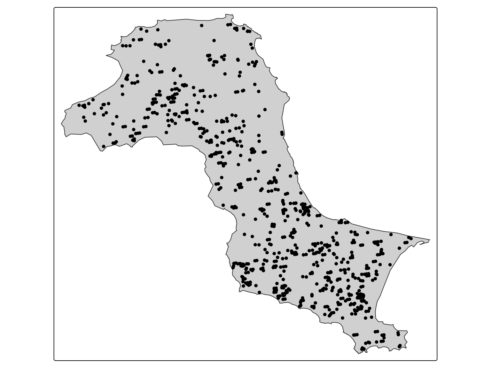
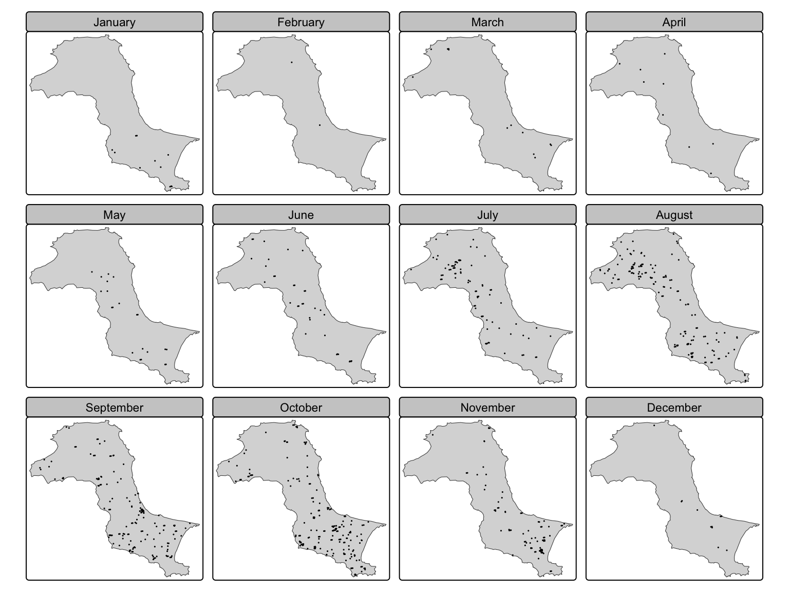
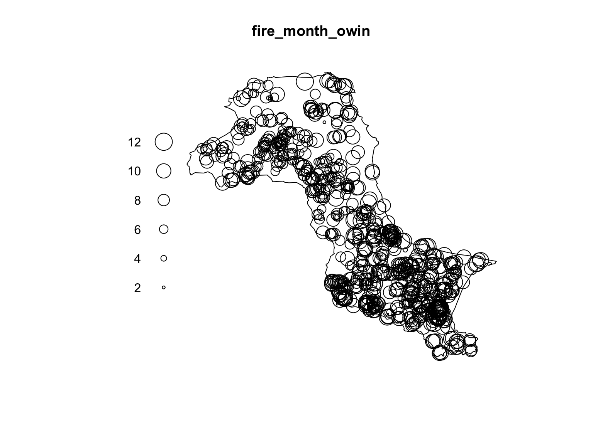
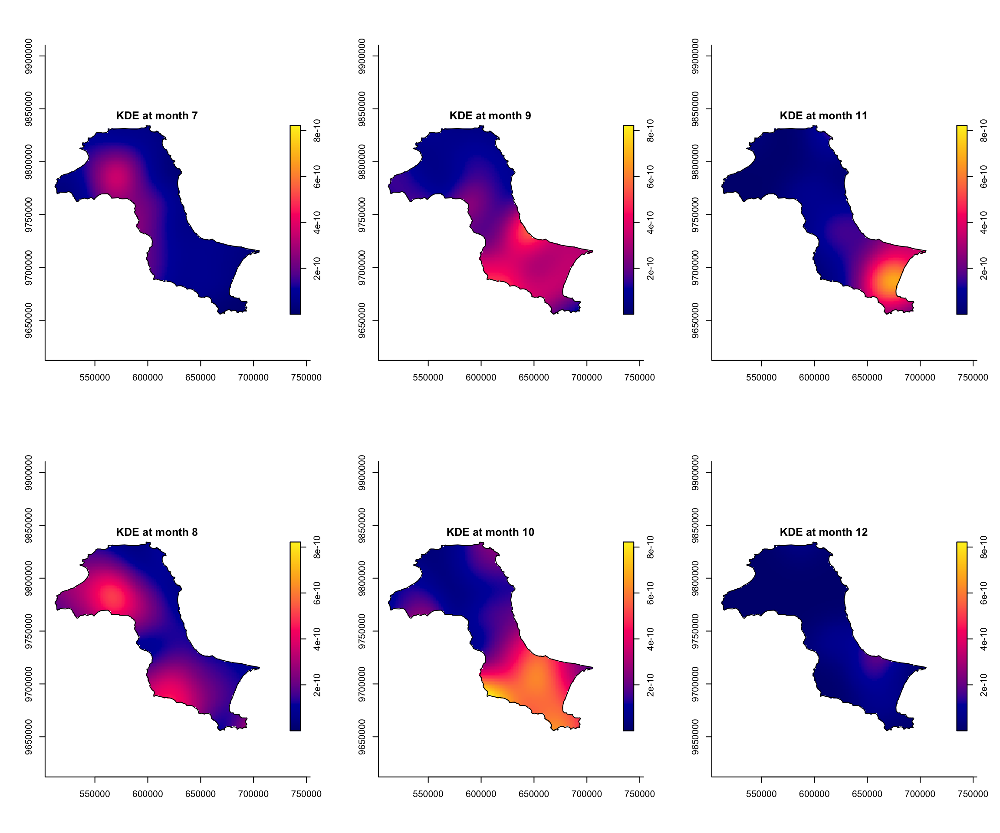
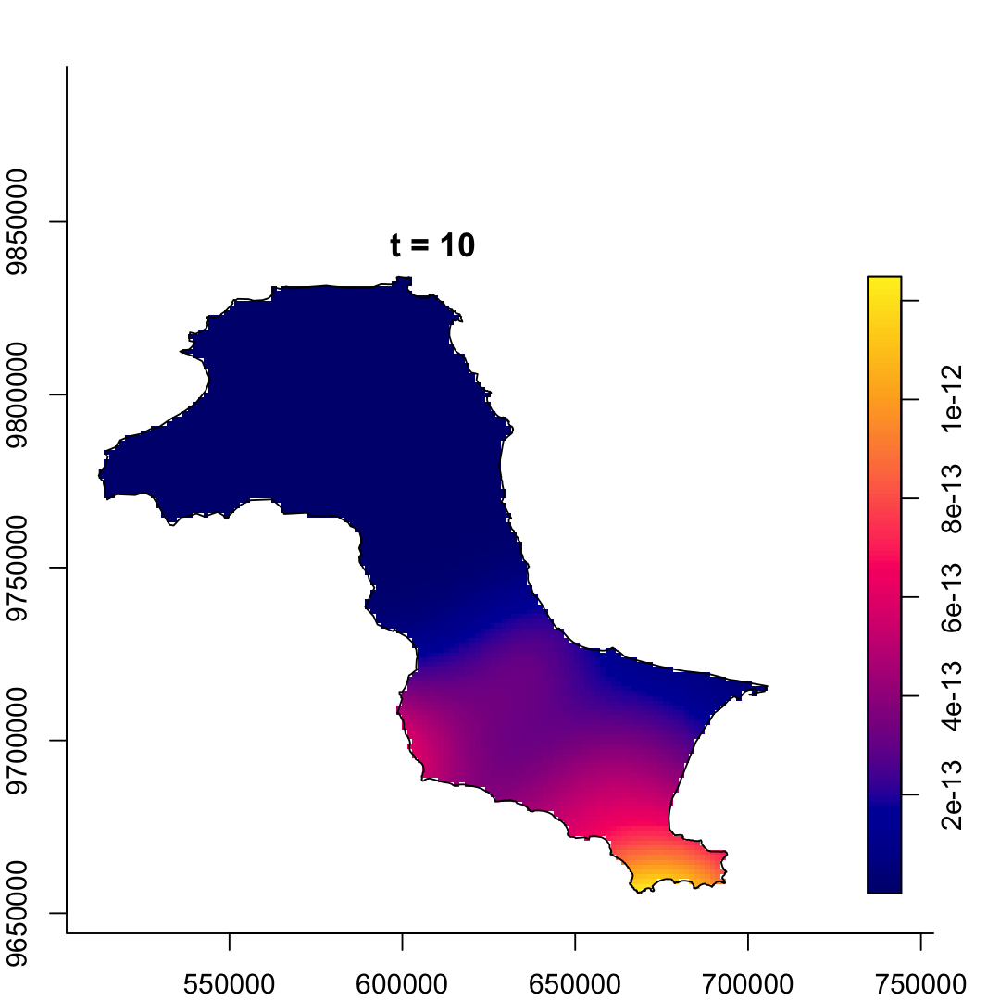
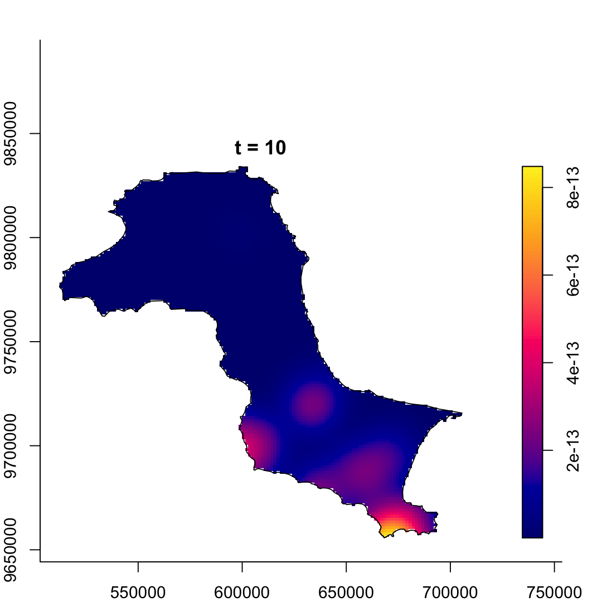
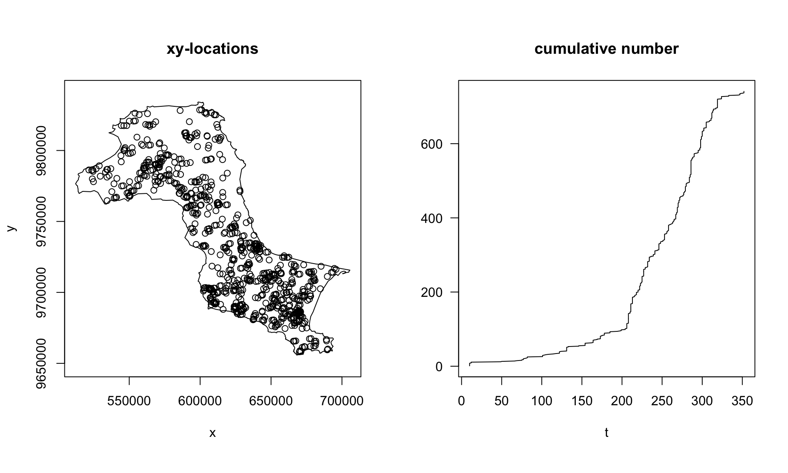
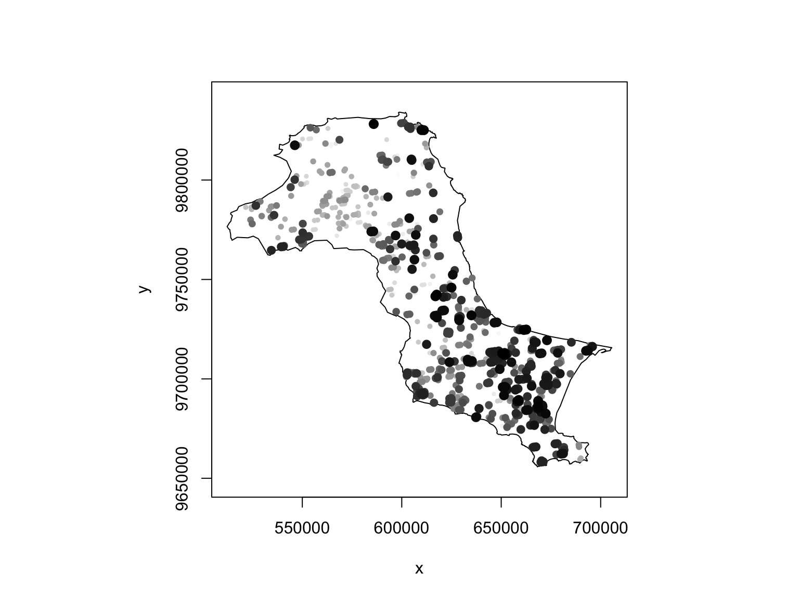

pacman::p_load(sf, spatstat, sparr,
tmap, stpp, tidyverse,
animation)Spatio-Temporal Point Patterns Analysis
Hands-on Exercise 3
6 Spatio-Temporal Point Patterns Analysis
6.1 Overview
I use the 2023 MODIS fire detections on Bangka Island to explore where and when events concentrate. The overall point map, monthly STKDE, daily STKDE, and space-time K-function each give me a different view of the same observations.
6.2 Learning Outcome
6.2.1 The research questions
My questions are:
- Are fire locations spatially and spatio-temporally independent?
- Where and when do detections concentrate?
- How do monthly marks, daily marks, and smoothing bandwidths change the interpretation?
6.3 The data
The local files contain a NASA FIRMS 2023 MODIS extract and a geoBoundaries Bangka-Belitung boundary. I extract the largest polygon, Bangka Island, and retain its fire points. This produces 741 detections. The boundary is an ADM1-derived coastline; the course uses a union of sub-district boundaries. Small edge and bandwidth differences can follow from this boundary version.
6.4 Installing and Loading the R packages
I load the packages used for the spatial, temporal, and mapping steps.
6.5 Importing and Preparing Study Area
6.5.1 Importing study area
The course import paths are followed by the local import. I select the main island before defining the observation window.
kbb <- st_read(dsn="chap06/data/rawdata",
layer = "Kepulauan_Bangka_Belitung")kbb <- st_read(dsn="data/rawdata",
layer = "Kepulauan_Bangka_Belitung",
quiet = TRUE)
kbb_parts <- st_cast(kbb, "POLYGON")
kbb <- kbb_parts[which.max(st_area(kbb_parts)), ]kbb_sf <- st_read(dsn="chap06/data/rawdata",
layer = "Kepulauan_Bangka_Belitung") %>%
st_union() %>%
st_zm(drop = TRUE, what = "ZM") %>%
st_transform(crs = 32748)kbb_sf <- kbb %>%
st_union() %>%
st_zm(drop = TRUE, what = "ZM") %>%
st_transform(crs = 32748)6.5.2 Converting OWIN
kbb_owin <- as.owin(kbb_sf)
kbb_owinwindow: polygonal boundary
enclosing rectangle: [512196.8, 705610.2] x [9655723, 9834162] unitsclass(kbb_owin)[1] "owin"
TipMy observation
I transformed the boundary to EPSG:32748 before creating the owin object because the next steps use distance and density. Keeping the data in longitude and latitude would make the bandwidth values harder to interpret.
6.6 Importing and Preparing Forest Fire data
fire_sf <- read_csv("chap06/data/rawdata/forestfires.csv") %>%
st_as_sf(coords = c("longitude", "latitude"),
crs = 4326) %>%
st_transform(crs = 32748)fire_sf <- read_csv("data/rawdata/forestfires.csv", show_col_types = FALSE) %>%
st_as_sf(coords = c("longitude", "latitude"),
crs = 4326) %>%
st_transform(crs = 32748)
fire_sf <- st_filter(fire_sf, kbb_sf)fire_sf <- fire_sf %>%
mutate(DayofYear = yday(acq_date)) %>%
mutate(Month_num = month(acq_date)) %>%
mutate(Month_fac = month(acq_date,
label = TRUE,
abbr = FALSE))month_counts <- fire_sf %>%
st_drop_geometry() %>%
count(Month_fac, name = "detections")
month_counts# A tibble: 12 × 2
Month_fac detections
<ord> <int>
1 January 11
2 February 2
3 March 12
4 April 9
5 May 21
6 June 34
7 July 79
8 August 143
9 September 146
10 October 185
11 November 88
12 December 11
TipWhat I noticed
The monthly table contains 741 detections. The largest monthly count is 185, in October. I see a clear concentration in the second half of the year. Linking that pattern to dry weather would require rainfall and satellite-observation coverage data.
6.7 Visualising the Fire Points
6.7.1 Overall plot
tm_shape(kbb_sf)+
tm_polygons() +
tm_shape(fire_sf) +
tm_dots()
TipMy observation
The points are not spread like a regular grid. Several clusters sit inland, and the edge of the island has fewer detections. This is why I would not stop at a point map: visually dense patches can be affected by symbol overlap, so the density plots below are a better diagnostic.
6.7.2 Visuaising geographic distribution of forest fires by month
tm_shape(kbb_sf)+
tm_polygons() +
tm_shape(fire_sf) +
tm_dots(size = 0.1) +
tm_facets(by="Month_fac",
free.coords=FALSE,
drop.units = TRUE)
TipWhat I noticed
The monthly facets make the seasonal shift much easier to see. The dense months are not just larger versions of the quiet months; the active areas become more continuous, especially around the second half of the year.
6.8 Computing STKDE by Month
6.8.1 Extracting forest fires by month
fire_month <- fire_sf %>%
select(Month_num)6.8.2 Creating ppp
fire_month_ppp <- as.ppp(fire_month)
fire_month_pppMarked planar point pattern: 741 points
marks are numeric, of storage type 'double'
window: rectangle = [521564.1, 695791] x [9658137, 9828767] unitssummary(fire_month_ppp)Marked planar point pattern: 741 points
Average intensity 2.49258e-08 points per square unit
Coordinates are given to 10 decimal places
marks are numeric, of type 'double'
Summary:
Min. 1st Qu. Median Mean 3rd Qu. Max.
1.000 8.000 9.000 8.579 10.000 12.000
Window: rectangle = [521564.1, 695791] x [9658137, 9828767] units
(174200 x 170600 units)
Window area = 29728200000 square unitsany(duplicated(fire_month_ppp))[1] FALSE6.8.3 Including Owin object
fire_month_owin <- fire_month_ppp[kbb_owin]
summary(fire_month_owin)Marked planar point pattern: 741 points
Average intensity 6.230409e-08 points per square unit
Coordinates are given to 10 decimal places
marks are numeric, of type 'double'
Summary:
Min. 1st Qu. Median Mean 3rd Qu. Max.
1.000 8.000 9.000 8.579 10.000 12.000
Window: polygonal boundary
single connected closed polygon with 1574 vertices
enclosing rectangle: [512196.8, 705610.2] x [9655723, 9834162] units
(193400 x 178400 units)
Window area = 11893300000 square units
Fraction of frame area: 0.345plot(fire_month_owin)
TipMy observation
The ppp summary confirms that the marks are numeric months, which is exactly what spattemp.density() expects. The polygon window is also important: it prevents the sea and empty bounding-box space from being treated as part of the observation area.
6.8.4 Computing Spatio-temporal KDE
I use sparr::spattemp.density() to estimate density jointly over space and time.
st_kde <- spattemp.density(fire_month_owin)
summary(st_kde)Spatiotemporal Kernel Density Estimate
Bandwidths
h = 15102.47 (spatial)
lambda = 0.0304 (temporal)
No. of observations
741
Spatial bound
Type: polygonal
2D enclosure: [512196.8, 705610.2] x [9655723, 9834162]
Temporal bound
[1, 12]
Evaluation
128 x 128 x 12 trivariate lattice
Density range: [8.44959e-28, 8.215361e-10]
TipMy observation
The printed bandwidths and density range are calculated from the point pattern above. The temporal bandwidth is in months here. Integer month marks can produce very narrow automatic temporal smoothing; I compare this result with the day-of-year version to see how the time representation affects the surface.
6.8.5 Plotting the spatio-temporal KDE object
I plot July to December with the common density range and the column-wise panel order used in the exercise.
tims <- c(7,8,9,10,11,12)
par(mfcol=c(2,3))
for(i in tims){
plot(st_kde, i,
override.par=FALSE,
fix.range=TRUE,
main=paste("KDE at month",i))
}
TipWhat I noticed
The six panels use fix.range = TRUE, which keeps the colour scale common across months. I compare the north-western concentration in July with the southern concentration later in the year. A bright local hotspot and a high monthly total describe different aspects of the pattern. The monthly count table helps me keep those two readings separate.
6.9 Computing STKDE by Day of Year
6.9.1 Creating ppp object
fire_yday_ppp <- fire_sf %>%
select(DayofYear) %>%
as.ppp()6.9.2 Including Owin object
fire_yday_owin <- fire_yday_ppp[kbb_owin]
summary(fire_yday_owin)Marked planar point pattern: 741 points
Average intensity 6.230409e-08 points per square unit
Coordinates are given to 10 decimal places
marks are numeric, of type 'double'
Summary:
Min. 1st Qu. Median Mean 3rd Qu. Max.
10.0 213.0 258.0 245.9 287.0 352.0
Window: polygonal boundary
single connected closed polygon with 1574 vertices
enclosing rectangle: [512196.8, 705610.2] x [9655723, 9834162] units
(193400 x 178400 units)
Window area = 11893300000 square units
Fraction of frame area: 0.3456.9.3
kde_yday <- spattemp.density(
fire_yday_owin)
summary(kde_yday)Spatiotemporal Kernel Density Estimate
Bandwidths
h = 15102.47 (spatial)
lambda = 6.3198 (temporal)
No. of observations
741
Spatial bound
Type: polygonal
2D enclosure: [512196.8, 705610.2] x [9655723, 9834162]
Temporal bound
[10, 352]
Evaluation
128 x 128 x 343 trivariate lattice
Density range: [3.881532e-27, 2.732187e-12]plot(kde_yday)
TipMy observation
Daily marks retain changes within each month. I compare the early sparse periods with the late-year concentration and inspect whether hotspots persist across neighbouring dates. The default plot(kde_yday) rescales colours between frames, so brightness across this animation does not measure an increase in absolute density. A fixed colour range is needed for that comparison.
6.10 Computing STKDE by Day of Year: Improved method
The bootstrap calculation selects spatial and temporal bandwidths. I then run the specified 9,000-metre and 19-day settings and compare their smoothing with the automatic estimate.
set.seed(1234)
BOOT.spattemp(fire_yday_owin)Initialising...Done.
Optimising...
h = 15102.47 ; lambda = 16.84806
h = 16612.72 ; lambda = 16.84806
h = 15102.47 ; lambda = 1527.095
h = 15480.03 ; lambda = 771.9715
h = 15668.81 ; lambda = 394.4098
h = 15763.2 ; lambda = 205.6289
h = 15810.4 ; lambda = 111.2385
h = 15833.99 ; lambda = 64.04328
h = 15845.79 ; lambda = 40.44567
h = 15851.69 ; lambda = 28.64687
h = 15863.49 ; lambda = 5.049258
h = 15854.64 ; lambda = 22.74746
h = 15860.54 ; lambda = 10.94866
h = 15859.07 ; lambda = 13.89836
h = 14348.82 ; lambda = 13.89836
h = 13216.87 ; lambda = 12.42351
h = 12460.27 ; lambda = 15.37321
h = 10760.88 ; lambda = 16.11064
h = 8875.282 ; lambda = 11.68608
h = 10432.08 ; lambda = 12.97658
h = 7976.084 ; lambda = 16.66371
h = 9286.281 ; lambda = 15.60366
h = 9615.08 ; lambda = 18.73771
h = 9206.581 ; lambda = 21.61828
h = 8140.483 ; lambda = 18.23073
h = 8795.582 ; lambda = 17.70071
h = 9124.381 ; lambda = 20.83477
h = 9245.806 ; lambda = 16.91143
h = 8426.308 ; lambda = 15.87443
h = 9317.887 ; lambda = 18.02189
Done. h lambda
9317.88720 18.02189 6.10.1 Computing spatio-temporal KDE
kde_yday <- spattemp.density(fire_yday_owin,
h = 9000,
lambda = 19)
summary(kde_yday)Spatiotemporal Kernel Density Estimate
Bandwidths
h = 9000 (spatial)
lambda = 19 (temporal)
No. of observations
741
Spatial bound
Type: polygonal
2D enclosure: [512196.8, 705610.2] x [9655723, 9834162]
Temporal bound
[10, 352]
Evaluation
128 x 128 x 343 trivariate lattice
Density range: [2.069716e-19, 2.434166e-12]6.10.2 Plotting the output spatio-temporal KDE
plot(kde_yday)
TipWhat I noticed
The bootstrap-guided bandwidths are a useful reminder that space and time need different smoothing scales. A 9000 metre spatial bandwidth is still broad enough to show regional hotspots, while a 19 day temporal bandwidth avoids treating every nearby date as a completely separate pattern.
6.11 Spatio-temporal Point Patterns Analysis: stpp methods
6.11.1 Preparing spatio-temporal point process object of stpp
coords <- st_coordinates(fire_sf)fire_df <- data.frame(
x = coords[, 1],
y = coords[, 2],
t = fire_sf$`DayofYear`)coords <- st_coordinates(kbb_sf)
s_region_matrix <- coords[, 1:2]fire_stpp <- as.3dpoints(fire_df)class(fire_stpp)[1] "stpp"plot(fire_stpp, s_region_matrix)
plot(fire_stpp, s_region_matrix,
pch = 19, mark = TRUE)
TipMy observation
Colouring the points by day of year shows that later-year detections occupy many of the dense inland locations. I read this as a space-time concentration, not only a spatial cluster repeated uniformly across the year.
6.11.2 Computing spatio-temporal k-function
kbb_stik <- STIKhat(fire_stpp,
s.region = s_region_matrix,
t.region = c(150,250),
infectious = TRUE)plotK(kbb_stik, n = 20,
L = TRUE, type = "contour")6.11.3 Guide to interpret the plot
The contour is the transformed space-time K estimate. I read the spatial and temporal axes together, and check the time interval used in the computation. A departure from the theoretical reference is descriptive evidence; a simulation test is needed for a significance claim.
Further Exploration
Month-by-month spatial density
These separate two-dimensional KDEs use a separate maximum for each month. I use them to inspect within-month locations; the joint STKDE above supplies the space-time estimate.
fire_xy <- fire_sf %>%
mutate(
x = st_coordinates(.)[, 1],
y = st_coordinates(.)[, 2]
) %>%
st_drop_geometry()
kbb_outline <- st_as_sf(kbb_sf)
ggplot() +
geom_sf(data = kbb_outline, fill = "#f8faf5", colour = "#4d5f0c", linewidth = 0.35) +
stat_density_2d_filled(
data = filter(fire_xy, Month_num %in% 7:12),
aes(x = x, y = y, fill = after_stat(level)),
alpha = 0.72,
contour_var = "ndensity",
bins = 7
) +
geom_point(
data = filter(fire_xy, Month_num %in% 7:12),
aes(x = x, y = y),
colour = "#7f1d1d",
alpha = 0.38,
size = 0.35
) +
facet_wrap(~ Month_fac, ncol = 3) +
coord_sf(crs = st_crs(kbb_sf), datum = NA) +
scale_fill_manual(values = c("#edf8fb", "#ccece6", "#99d8c9", "#66c2a4", "#41ae76", "#238b45", "#005824")) +
labs(fill = "Relative\ndensity") +
theme(
legend.position = "right",
panel.grid.major = element_line(colour = "#e4ece7", linewidth = 0.25),
strip.text = element_text(face = "bold")
)
Broader day-of-year groups
Each panel is separately normalised. The grouping shows the locations occupied in each part of the year.
fire_periods <- fire_xy %>%
mutate(
period = case_when(
DayofYear <= 120 ~ "Days 1-120",
DayofYear <= 210 ~ "Days 121-210",
DayofYear <= 300 ~ "Days 211-300",
TRUE ~ "Days 301-365"
),
period = factor(period, levels = c("Days 1-120", "Days 121-210", "Days 211-300", "Days 301-365"))
)
ggplot() +
geom_sf(data = kbb_outline, fill = "#fbfbf3", colour = "#60710d", linewidth = 0.35) +
stat_density_2d_filled(
data = fire_periods,
aes(x = x, y = y, fill = after_stat(level)),
alpha = 0.72,
contour_var = "ndensity",
bins = 6
) +
geom_point(
data = fire_periods,
aes(x = x, y = y),
colour = "#831843",
alpha = 0.35,
size = 0.32
) +
facet_wrap(~ period, ncol = 2) +
coord_sf(crs = st_crs(kbb_sf), datum = NA) +
scale_fill_manual(values = c("#f7fcfd", "#d0ecf0", "#9bd5db", "#66b6c6", "#3288bd", "#0b4f6c")) +
labs(fill = "Relative\ndensity") +
theme(
legend.position = "right",
panel.grid.major = element_line(colour = "#e2eceb", linewidth = 0.25),
strip.text = element_text(face = "bold")
)
Time-marked point map
ggplot(fire_df, aes(x = x, y = y, colour = t)) +
geom_point(alpha = 0.58, size = 0.8) +
geom_sf(data = kbb_outline, inherit.aes = FALSE, fill = NA, colour = "#45520b", linewidth = 0.35) +
coord_sf(crs = st_crs(kbb_sf), datum = NA) +
scale_colour_viridis_c(option = "C", name = "Day of year") +
labs(x = "Easting", y = "Northing") +
theme(panel.grid.major = element_line(colour = "#e6eeec", linewidth = 0.25))
Nearby event pairs
sp_dist <- as.matrix(dist(as.matrix(fire_df[, c("x", "y")])))
tm_dist <- as.matrix(dist(fire_df$t))
upper_idx <- upper.tri(sp_dist)
pair_summary <- expand_grid(
spatial_band = c(5000, 10000, 20000),
temporal_band = c(7, 14, 30)
) %>%
mutate(
close_pairs = map2_int(
spatial_band,
temporal_band,
~ sum(sp_dist[upper_idx] <= .x & tm_dist[upper_idx] <= .y)
),
spatial_label = paste0(spatial_band / 1000, " km"),
temporal_label = paste0(temporal_band, " days")
)
pair_summary %>%
dplyr::select(spatial_label, temporal_label, close_pairs) %>%
arrange(spatial_label, temporal_label)# A tibble: 9 × 3
spatial_label temporal_label close_pairs
<chr> <chr> <int>
1 10 km 14 days 2577
2 10 km 30 days 4188
3 10 km 7 days 1713
4 20 km 14 days 7268
5 20 km 30 days 12298
6 20 km 7 days 4457
7 5 km 14 days 1277
8 5 km 30 days 1845
9 5 km 7 days 924ggplot(pair_summary, aes(x = temporal_label, y = spatial_label, fill = close_pairs)) +
geom_tile(colour = "white", linewidth = 0.8) +
geom_text(aes(label = close_pairs), colour = "white", fontface = "bold") +
scale_fill_gradient(low = "#a6c936", high = "#7f1d1d") +
labs(x = "Temporal distance", y = "Spatial distance", fill = "Pairs") +
theme(
panel.grid = element_blank(),
axis.text = element_text(face = "bold")
)
TipMy observation
Close-pair counts necessarily increase as either threshold grows because each larger window contains the smaller one. I use these counts as descriptive summaries of proximity. Establishing excess space-time interaction requires a benchmark that preserves the spatial and temporal margins, together with edge correction; raw pair counts alone cannot establish it.
Final Takeaway
This exercise helped me see why spatio-temporal point pattern analysis needs both a spatial window and a time mark. The overall map suggests clustering, but the monthly and day-of-year views show when the clustering becomes strongest. In my local extract, the clearest signal appears after mid-year, with the strongest density around the late dry-season months.
Reproducibility requires the data, study window, method, and reported output to agree. I record the boundary source and run the STKDE and K-function directly. Separate two-dimensional density panels give an additional visual comparison, with their own scale limitations.
TipBeyond the Code: Time Marks Need a Scale
For spatio-temporal KDE, I should not treat Month_num and DayofYear as interchangeable time marks. Month is easier to communicate and gives a clean seasonal overview, but it hides within-month changes. Day of year is more detailed, but it creates many more time slices and needs stronger smoothing to avoid turning the page into noisy frame-by-frame output.
The lambda value is therefore similar to bandwidth in space: it decides how much neighbouring time is allowed to influence a density estimate. In my interpretation, a monthly view is good for telling the broad fire-season story, while the day-of-year view is better for checking whether that story happens gradually or through shorter bursts of activity.
6.12 Reference
- Course source: Spatio-Temporal Point Patterns Analysis
- Hall, P. (1990). Using the Bootstrap to Estimate Mean Squared Error and Select Smoothing Parameter in Nonparametric Problems.
- NASA FIRMS: Archive Download.
- geoBoundaries: Indonesia ADM1 boundary.
- sparr reference.